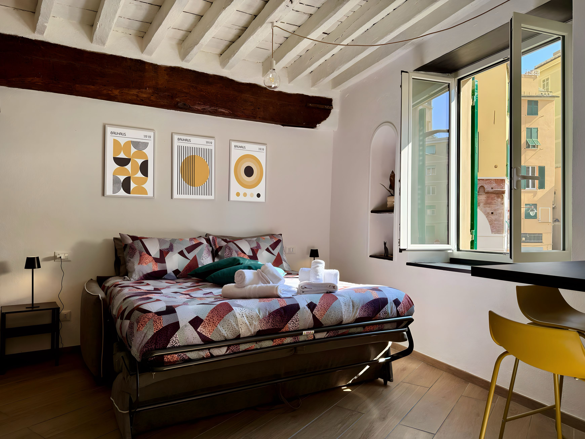
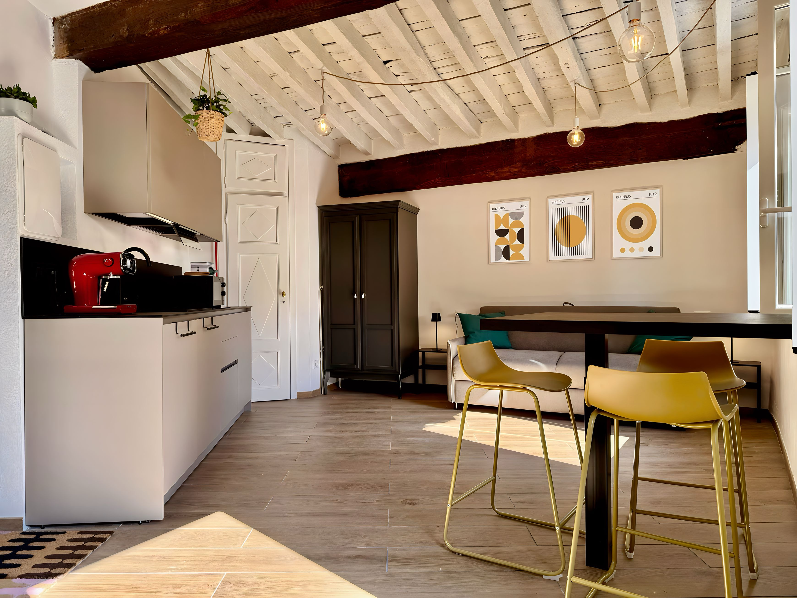
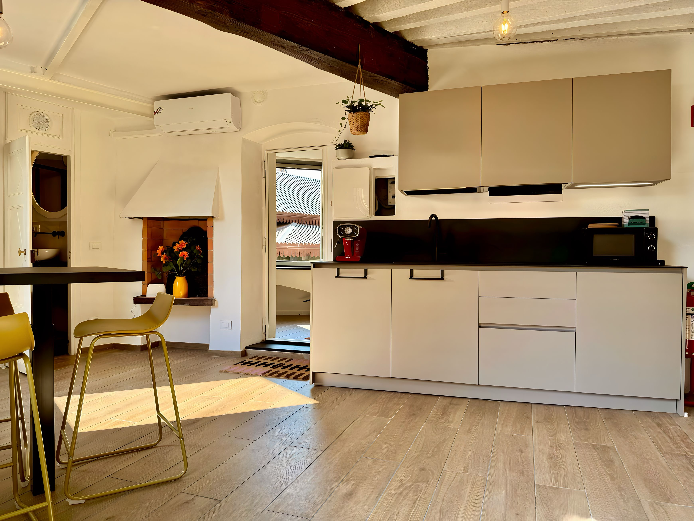
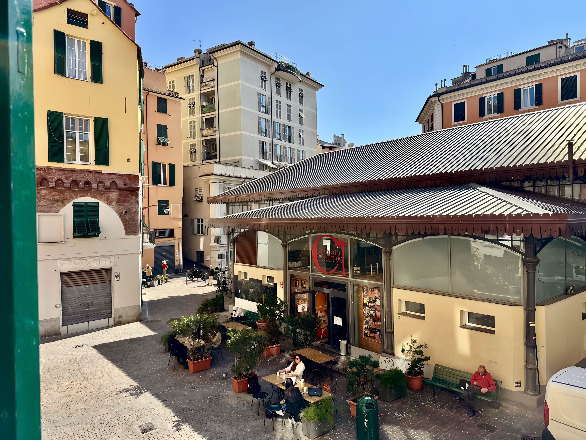
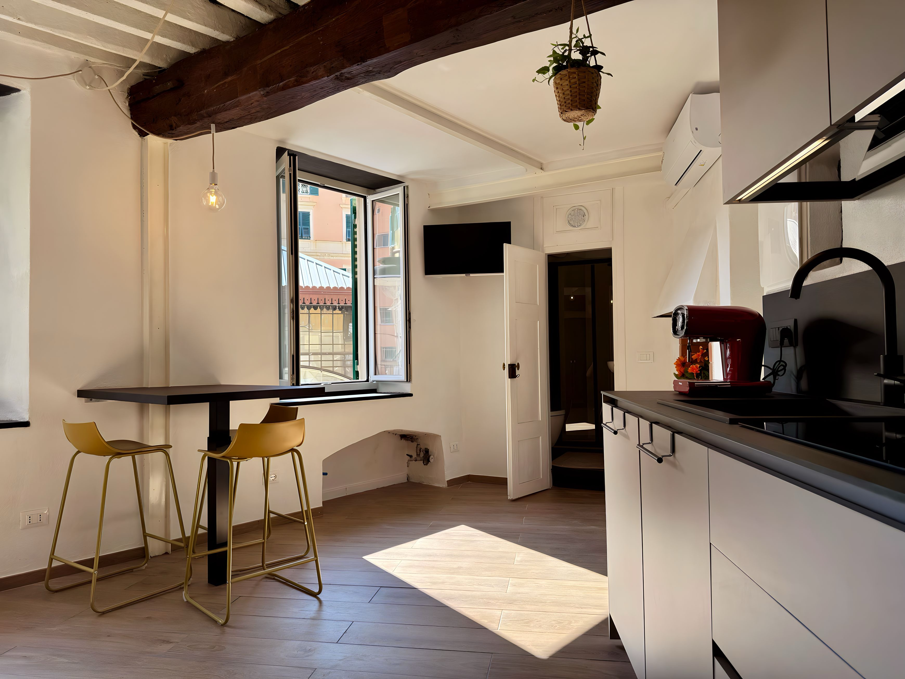
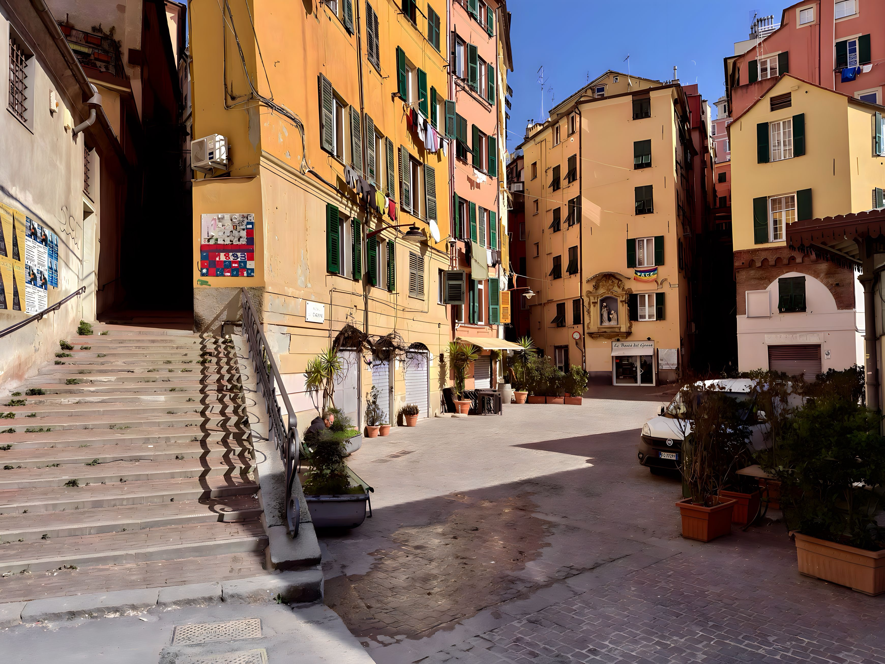

01
Arrivi e sei dentro
Smart lock, istruzioni chiare, ingresso indipendente. Nessuna attesa, nessuna coordinazione complicata.

Genova, quartiere del Carmine
Carmine 1 è un monolocale ristrutturato con accesso indipendente, travi a vista e una finestra aperta sulla piazza. Un posto piccolo e preciso, capace di restituire la Genova più vera — quella dei carruggi stretti, del profumo di focaccia la mattina, delle sere al Carmine con i genovesi veri.
L'anima del soggiorno
Dalle finestre entra la vita del Carmine — voci, profumo di focaccia, il sole che cambia colore lungo la giornata. Dentro, tutto respira con equilibrio: travi a vista che portano calore, una cucina pronta all'uso, un letto comodo che si apre verso il cielo chiaro di Genova. Il tipo di spazio che non cerca di impressionare, ma che difficilmente si dimentica.
"Il fascino non è solo tra queste mura. È nel modo in cui la piazza entra a fare parte del tuo soggiorno."
Carmine 1 ha tutto il necessario per un soggiorno urbano davvero comodo: ingresso indipendente, cucina attrezzata, bagno privato, Wi-Fi veloce, aria condizionata, smart TV. La posizione ideale per scoprire l'Acquario, la Darsena, il Porto Antico, i Palazzi dei Rolli UNESCO e il cuore universitario di Genova — tutto a piedi, senza fretta.
Gallery




La casa
Il soggiorno è pensato per stare bene: zona relax con letto trasformabile, cucina lineare con tutto l'attrezzato, tavolo snack, macchina del caffè, aria condizionata. Un'impostazione elegante e funzionale, in cui nulla è lasciato al caso — dalla luce naturale alla scelta dei materiali.
E poi i dettagli che fanno davvero la differenza: self check-in con smart lock, Wi-Fi veloce, smart TV, asciugacapelli, ferro da stiro, biancheria fresca, stoviglie complete e calici da vino. Tutto quello che serve per arrivare stanchi e ritrovarsi subito a proprio agio.
Smart lock, istruzioni chiare, ingresso indipendente. Nessuna attesa, nessuna coordinazione complicata.
Quello che vedi è quello che trovi — o meglio. Pulizia ineccepibile, arredi scelti con gusto, luce naturale generosa.
Il Carmine è la Genova che non si esaurisce mai: locali storici, piazza sempre animata, atmosfera che ti cattura.
Porto Antico, Acquario, Rolli, università e carruggi: tutto a meno di venti minuti dalla tua porta.
Il quartiere
Il Carmine è uno di quei quartieri che i genovesi amano da sempre e che i turisti scoprono quasi per caso — spesso proprio attraverso una casa come questa. Piazze vissute, bar storici, carruggi che si aprono in slarghi inaspettati. Da qui si cammina verso il Porto Antico, l'Acquario, le Strade Nuove e i Palazzi dei Rolli UNESCO lasciandosi guidare dall'istinto più che dalla mappa.
Nelle vicinanze trovi la migliore focaccia genovese, ristoranti autentici, mercati mattutini, l'università e quella sensazione rara di abitare davvero un quartiere — non solo di soggiornare in una città.

Host e fiducia
Betta è genovese. Ha ristrutturato questa casa con cura genuina e la gestisce con la stessa attenzione che riserva alle persone. Le recensioni lo confermano: check-in semplice, risposte rapide, casa esattamente come nelle foto — spesso anche meglio. Il tipo di host che risponde in pochi minuti e che conosce la città meglio di qualsiasi guida turistica.
Host di Genova, innovation manager per vocazione, padrona di casa per passione. Ha curato ogni angolo di Carmine 1 con uno stile preciso e caldo — pensando a chi arriva da lontano ma vuole sentirsi subito a casa propria.
"Monolocale con posizione perfetta, pulito e accogliente. La comunicazione con Betta è veloce ed esaustiva. Tornerò senza dubbio."
Ospite italiano"Appartement très agréable où tout est bien pensé. Excellent séjour — on reviendra." Un'esperienza che parla da sola, in qualsiasi lingua.
Ospite francese"Tutto raggiungibile a piedi, le foto sono fedeli alla realtà, Betta risponde sempre in tempi brevissimi. Il soggiorno ideale per scoprire Genova." — Dalla posizione alla cura, il filo comune di chi ci torna.
Sintesi di più soggiorniContatti
Sei interessato a Carmine 1 per un fine settimana, un city break o qualche giorno in più? Compila il form qui accanto — riceverai una risposta da Betta in poco tempo, con disponibilità, prezzi e tutto quello che ti serve sapere prima di prenotare.
Al click si aprirà la tua email con oggetto e testo già pronti. Betta risponde di solito entro poche ore.